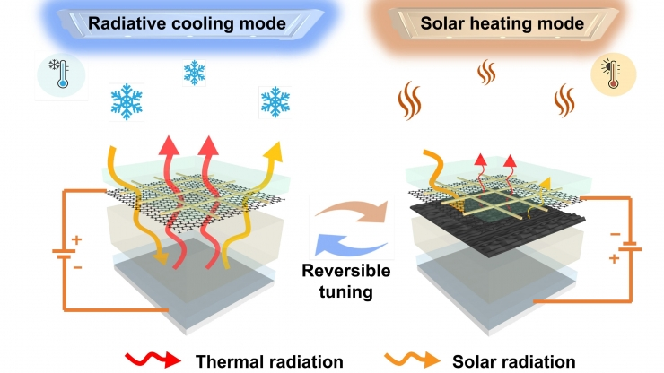
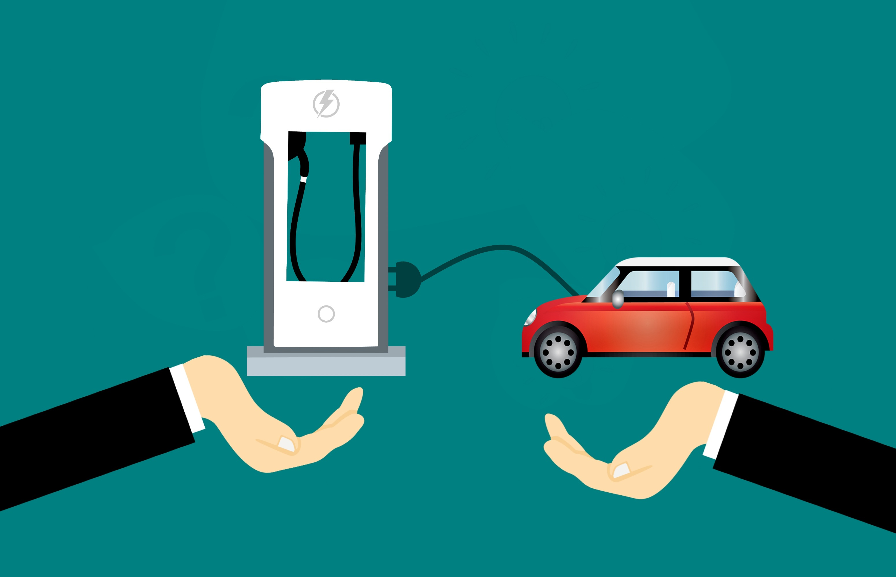

Uses of electricity
- LIGHTNING
- HEATING AND COOLING
- APPLIANCES
- TRANSPORTATION
Electricity is used to energize various lighting technologies, including incandescent, fluorescent, and LED bulbs, enabling them to emit light. Efficient and cost-effective lighting systems are crucial for enhancing both the functionality and aesthetics of different settings while conserving energy.Electricity plays a pivotal role in powering an array of lighting solutions, each tailored to specific needs and preferences. Fluorescent lighting employs gas discharges to create visible light, often found in commercial spaces and homes for general illumination. LEDs, on the other hand, use semiconductor materials to produce light, providing a highly efficient, long-lasting, and versatile lighting solution for various applications. Furthermore, streets and public spaces are illuminated by electrically powered streetlights, ensuring safety and security during nighttime hours. The choice of lighting technology, influenced by factors like energy efficiency and cost-effectiveness, plays a critical role in promoting sustainability and minimizing electricity consumption.
Heating, Ventilation, and Air Conditioning (HVAC) systems are essential in residential and commercial buildings, relying on electricity to provide precise climate control. During colder periods, electric heating elements or heat pumps generate warmth, while in hot weather, air conditioners use electricity to remove heat, ensuring year-round comfort. Ventilation components distribute fresh air and maintain air quality, often including electric air purifiers and filters. Zoning capabilities enable customized temperature control in different areas, optimizing energy usage. Modern HVAC systems feature energy-efficient technologies, like variable-speed compressors and smart thermostats, reducing electricity consumption. In commercial spaces, HVAC systems maintain consistent indoor conditions for productivity, while in homes, they adapt to changing weather and user preferences. Environmental impact depends on the electricity source, making renewable energy and efficient systems key for reducing emissions and enhancing sustainability. Overall, electricity-driven HVAC systems play a crucial role in maintaining comfortable, healthy, and energy-efficient indoor environments, continually advancing to improve efficiency and reduce their environmental footprint.
.jpg) Electrical appliances are the backbone of modern households, offering unparalleled convenience and efficiency in daily tasks. Refrigerators keep food fresh, reducing waste, while washing machines tackle laundry with ease. Ovens and microwaves cook meals swiftly and precisely, making meal preparation a breeze. These appliances not only simplify chores but also contribute to improved quality of life. They save time, enable multitasking, and enhance the overall comfort and convenience of homes. From preserving groceries to simplifying the cooking process, electrical appliances have become indispensable in our daily routines, allowing us to focus on other important aspects of our lives while increasing energy efficiency and reducing manual labor. Dishwashers automate dish cleaning, sparing us from hours of manual labor. Vacuum cleaners, powered by electricity, maintain clean and healthy living spaces. Small kitchen appliances like blenders and coffee makers streamline food and beverage preparation, while entertainment systems provide leisure and relaxation. Additionally, heating and cooling appliances, such as air conditioners, maintain indoor climate control. Modern smart appliances offer connectivity and remote control, enhancing efficiency and energy management. The integration of energy-efficient features and smart technology in appliances promotes both convenience and sustainability, aligning with the global trend toward eco-friendly living.
Electrical appliances are the backbone of modern households, offering unparalleled convenience and efficiency in daily tasks. Refrigerators keep food fresh, reducing waste, while washing machines tackle laundry with ease. Ovens and microwaves cook meals swiftly and precisely, making meal preparation a breeze. These appliances not only simplify chores but also contribute to improved quality of life. They save time, enable multitasking, and enhance the overall comfort and convenience of homes. From preserving groceries to simplifying the cooking process, electrical appliances have become indispensable in our daily routines, allowing us to focus on other important aspects of our lives while increasing energy efficiency and reducing manual labor. Dishwashers automate dish cleaning, sparing us from hours of manual labor. Vacuum cleaners, powered by electricity, maintain clean and healthy living spaces. Small kitchen appliances like blenders and coffee makers streamline food and beverage preparation, while entertainment systems provide leisure and relaxation. Additionally, heating and cooling appliances, such as air conditioners, maintain indoor climate control. Modern smart appliances offer connectivity and remote control, enhancing efficiency and energy management. The integration of energy-efficient features and smart technology in appliances promotes both convenience and sustainability, aligning with the global trend toward eco-friendly living.
Electric vehicles (EVs) mark a monumental and transformative shift in the landscape of personal and public transportation, as they harness the power of electricity to drive electric motors, redefining the very essence of mobility. At the core of this revolution is a resounding commitment to sustainability, as EVs offer a promising solution to the pressing challenges of climate change and environmental degradation. By eschewing the conventional internal combustion engine in favor of electric propulsion, these vehicles stand as emissaries of a greener, cleaner, and more sustainable future. This shift drastically reduces emissions, with EVs producing zero tailpipe pollutants, thus significantly mitigating the impact of greenhouse gases and air pollutants on the environment and human health. This emission reduction is particularly crucial in urban areas, where air quality concerns and the battle against smog are paramount. Not confined to personal transportation, this transformation extends to the public transit sector, where electric buses and trains are increasingly becoming the norm in cities worldwide. These electric public transport options not only reduce operating costs but also provide silent, efficient, and emissions-free mobility for urban populations, contributing to a quieter and healthier urban environment. While there are still challenges, such as addressing range anxiety and ensuring the sustainability of battery production, it is undeniable that EVs are ushering in a revolution that extends beyond mobility; they are poised to revolutionize the energy sector, reshape the urban landscape, and redefine the relationship between technology, transportation, and the environment. As we make this momentous transition, it is increasingly evident that electric vehicles are not merely a mode of getting from one place to another; they represent a potent catalyst for positive change, reducing our environmental footprint, combating climate change, and reimagining how we interact with energy and transportation in an interconnected, sustainable, and resilient world.
 Air pollution from fossil fuel power plants presents a multifaceted environmental challenge. These facilities emit a cocktail of pollutants, including sulfur dioxide (SO2), nitrogen oxides (NOx), and particulate matter, which have severe repercussions. SO2 and NOx contribute to the formation of acid rain when they combine with atmospheric moisture, leading to the acidification of water bodies, harming aquatic life, and damaging soil and vegetation. Moreover, these emissions react with other compounds in the atmosphere to create ground-level ozone, a key component of smog, which adversely impacts air quality and human health, causing respiratory issues and exacerbating conditions such as asthma.
Mitigating air pollution from power plants necessitates transitioning to cleaner energy sources like renewables, implementing advanced emissions control technologies, and adhering to stricter environmental regulations. Promoting energy efficiency, adopting sustainable transportation solutions, and fostering public awareness are also critical components in reducing the adverse effects of air pollution on both the environment and public health.
Addressing air pollution from power plants is essential for safeguarding both human health and the environment. Transitioning to cleaner energy sources, enforcing stringent emissions standards, and adopting sustainable energy practices are essential steps toward reducing the adverse effects of air pollution, promoting healthier communities, and preserving ecosystems. Public support and policy initiatives focused on air quality improvement are critical to mitigating these far-reaching consequences.
Air pollution from fossil fuel power plants presents a multifaceted environmental challenge. These facilities emit a cocktail of pollutants, including sulfur dioxide (SO2), nitrogen oxides (NOx), and particulate matter, which have severe repercussions. SO2 and NOx contribute to the formation of acid rain when they combine with atmospheric moisture, leading to the acidification of water bodies, harming aquatic life, and damaging soil and vegetation. Moreover, these emissions react with other compounds in the atmosphere to create ground-level ozone, a key component of smog, which adversely impacts air quality and human health, causing respiratory issues and exacerbating conditions such as asthma.
Mitigating air pollution from power plants necessitates transitioning to cleaner energy sources like renewables, implementing advanced emissions control technologies, and adhering to stricter environmental regulations. Promoting energy efficiency, adopting sustainable transportation solutions, and fostering public awareness are also critical components in reducing the adverse effects of air pollution on both the environment and public health.
Addressing air pollution from power plants is essential for safeguarding both human health and the environment. Transitioning to cleaner energy sources, enforcing stringent emissions standards, and adopting sustainable energy practices are essential steps toward reducing the adverse effects of air pollution, promoting healthier communities, and preserving ecosystems. Public support and policy initiatives focused on air quality improvement are critical to mitigating these far-reaching consequences.